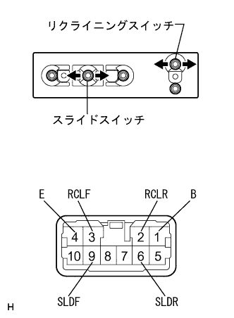

Front Power Seat Switch LH Inspection |
| 1. Measure Resistance |
 |
Using SST (Toyota electrical tester), measure the resistance between the connector terminals when each switch is operated.
| Tester Connection (Terminal Symbol) | Condition | Standard |
|---|---|---|
| 1(B) - 9(SLDF) 4(E) - 6(SLDR) | Front | Below 1 Ω |
| 4(E) - 6(SLDR) - 9(SLDF) | OFF | Below 1 Ω |
| 1(B) - 6(SLDR) 4(E) - 9(SLDF) | Rear | Below 1 Ω |
| Tester Connection (Terminal Symbol) | Condition | Standard |
|---|---|---|
| 1(B) - 3(RCLF) 2(RCLR) - 4(E) | Front | Below 1 Ω |
| 2(RCLR) - 3(RCLF) - 4(E) | OFF | Below 1 Ω |
| 1(B) - 2(RCLR) 3(RCLF) - 4(E) | Rear | Below 1 Ω |